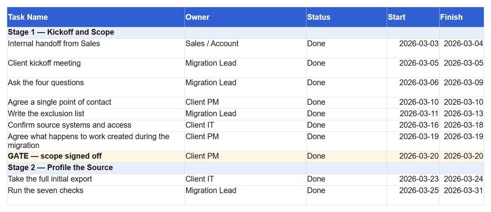
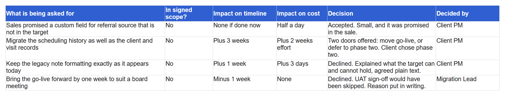

← All Kits · All Guides · Data Migration Series
Scope Creep and the Project Plan
Scope creep is not one big request, it is fifteen small reasonable ones. The answer is not refusal. It is showing what each request costs on the plan, and letting the client decide with that in front of them.
The short version. Never answer a change request with yes or no. Answer with its impact on the plan, then ask whether they want to table it or discuss it.
The plan is the tool
Why do you think a project plan makes this conversation easier? Answer before the paragraph does.
Because it moves the conversation off your opinion. Without a plan, "that will take another week" is you being difficult. With a plan, it is a milestone with a new date on it, and the client can see what else moves.
The research is blunt about which half matters. Dvir and Lechler studied 448 projects and found that the positive effect of good planning was almost entirely cancelled out by the negative effect of goal changes. Their conclusion is in the title: plans are nothing, changing plans is everything. The plan's value is not that it predicts the project. It is that it lets you show what a change does.

Small requests: show the impact, offer two doors
For anything that moves a milestone by days rather than weeks, the response has three parts.
Take it seriously. "That is a reasonable thing to want, and I can see why."
Show the impact. "Adding it means mapping finishes on the 22nd instead of the 15th, which pushes the dry run into the week your team is at the conference, so go-live moves to the 6th."
Offer two doors. "Do you want to table this until after go-live, or shall we talk it through properly?" Both doors are open, and neither of them is you saying no.
A lot of requests get tabled at that point, not because you pushed back but because the client had not seen the cost. The rest get discussed, which is the correct outcome for a request that is worth its cost.
Picture a client asking for one extra field on the day mapping closes. Say your first sentence back before reading on. If it named the impact rather than the answer, you have it.
When to bring in the people who own the outcome
Once a change moves the go-live date, it stops being a conversation between you and your daily contact. It needs whoever agreed the date in the first place.
Say it as a benefit, because it is one: "This changes the October date, so I would like to walk through it with the people who set that target, and make sure everyone is choosing the same tradeoff."
That also protects your contact. Agreeing to a date change on their own is a risk to them, and offering to share the decision is a kindness rather than an escalation.
Large requests: route them, do not absorb them
Some requests are not a timeline change, they are a different project. A second system nobody mentioned. A data set that was never in the contract.
The answer is warm and it is immediate. "That is not in the current scope, and absolutely, let me bring in client success and see what our options are."
Both halves matter. "Not in the current scope" is said plainly so it cannot be misremembered. "Let me see what our options are" means you are still on their side, and it hands a commercial decision to the people whose decision it is.
Never absorb a large request quietly to be helpful. It sets a precedent, it moves a date somebody else promised, and it means the next one arrives assuming the same answer.
Write it down the same day
Every change request, accepted or tabled, goes in the follow up email: what was asked, what it costs, what was decided, by whom.
A tabled request especially. Six weeks later somebody remembers asking and does not remember the decision, and a one line record settles it in seconds without anyone having to be right.

Cheat sheet
| Request size | Your move | Who decides |
|---|---|---|
| Days on one milestone | Show impact, offer table or discuss | Your contact |
| Moves the go-live date | Show impact, ask to include the people who set the date | The signer |
| Outside the contract | Name it plainly, route to client success | Your own commercial team |
| Anything, once decided | Write it in the follow up email | Recorded, not decided |
The one habit
Answer every change request with its impact on the plan, never with yes or no. It keeps you helpful and it keeps the date honest.
What is the request that most often arrives late in your projects?
Previous: When the Client Goes Quiet · Next: The Emails That Keep a Migration Moving · All eight stages: the series hub
Counting rows, grouping to find duplicates, and joining to find orphans covers most of what a migration asks of you. The SQL Kit teaches those moves in order, with the data in front of you.
Open the SQL Kit →Or start typing straight away: open SQL Drill, thirteen queries that each add one thing to the last.
You are moving a client’s records into a new system, and the part that worries you is the week the client goes quiet. The Data Migration Playbook is all eight stages in order, 53 pages, from the first kickoff meeting through hypercare, so you can run one without finding the important question three weeks too late.
The Data Migration Playbook, $29 →References
- Dvir, D., & Lechler, T. (2004). Plans are nothing, changing plans is everything: The impact of changes on project success. Research Policy, 33(1), 1–15.
- Gollwitzer, P. M., & Sheeran, P. (2006). Implementation intentions and goal achievement: A meta-analysis of effects and processes. Advances in Experimental Social Psychology, 38, 69–119.